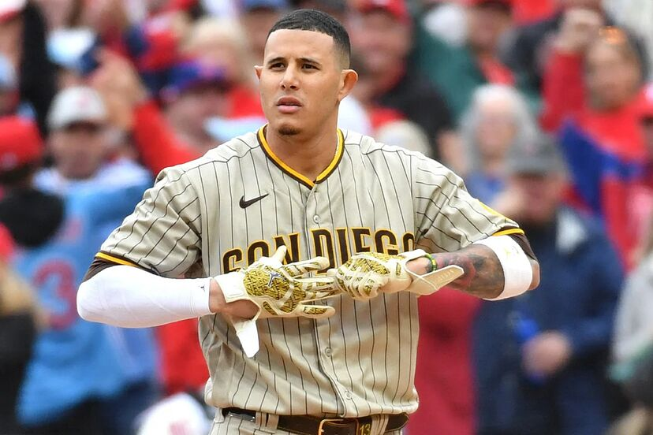
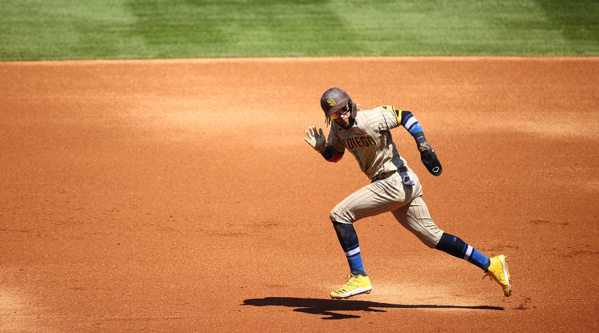

Manny Machado llega al homeplate listo para batear, lo conoces bien y sabes que es un bateador fuerte. Por lo que esperas en primera base hasta que el haga un hit
Manny golpea con todas sus fuerzas el lazamiento de pitcher llevando la bola a la zona mas profunda del campo. El equipo contrario se vuelve loco buscando la bola y tu aprovechas la confusion para correr todas las bases
El jardinero izquierdo logra agarrar la bola y se prepara para detener tu carretra en 3ra base, te das cuenta de esto y no sabes si seguir corriendo a homeplate con la posibildad de terminar el juego o quedarte en 3ra base y jugarla a lo seguro